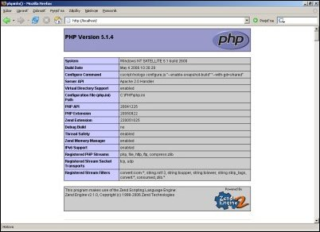

Slovak
SlovakPred pár dňami som na svoj pracovný počítač potreboval nainštalovať webový server, na ktorom by som mohol ladiť PHP skripty, a tak som sa rozhodol, že inštalačný proces zaznamenám. Hlavným dôvodom je, že nemám rád projekty ako napríklad PHPhome (linku neuvádzam zámerne), ktoré síce pomôžu začiatočníkom rýchlo spomínané produkty nainštalovať, no tým pred nimi skrývajú podstatu veci. Na škole som sa stretol s mnohými študentami, ktorí nemali ani len najmenšiu predstavu o tom, kde sa nachádzajú jednotlivé konfiguračné súbory alebo o tom, že PHP je príkazový interpret, ktorý nie je nijako zviazaný s webovým serverom Apache. Radšej ani nebudem písať, že stelesnením MySQL bol pre nich phpMyAdmin a na konzolu sa dokázali iba pozerať.
1. Webový daemon (server) APACHE - 2.0.x
Apache si môžete stiahnuť zo stránky projektu, a keďže verzie 1.3.x už pre systém Windows nie sú uvoľňované v binárnej podobe, bude logickou voľbou verzia 2.0.x.
V mojom prípade som stiahol súbor s názvom apache_2.0.58-win32-x86-no_ssl.msi, čo je klasický inštalátor pre systém Windows.
Odporúčam však pri inštalácii zmeniť cieľový adresár a nasmerovať ju priamo na disk c:\, kde bude inštalátorom aj tak automaticky vytvorený adresár apache2.
Ušetríte si tým množstvo času stráveného preklikávaním sa cez Program Files a ďalšie nezmyselné adresáre s medzerami v názve.
Po inštalácii stačí vo vašom prehliadači zadať adresu http://localhost a ak táto akcia neskončí chybovou hláškou, máte v systéme bežiaci webový server.
Ten prostredníctvom protokolu HTTP sprístupňuje súbory nachádzajúce sa v adresári c:\apache2\htdocs.
Pri inštalácii príkazového interpreta PHP budeme zasahovať do konfiguračného súboru daemona Apache c:\apache2\conf\httpd.conf, preto ho vypneme z príkazového riadka (cmd.exe) príkazom:
C:\> net stop apache2
Treba si zapamätať, že po každej úprave konfiguračného súboru je nutné daemon Apache reštartovať.
Môžete na to použiť príkazy net stop apache2 a net start apache2 alebo grafický nástroj systému Windows nachádzajúci sa v sekcii “Computer Management” s názvom “Services”.
Dokumentáciu k serveru Apache nájdete na adrese http://httpd.apache.org/docs/2.0/.
2. Interpret jazyka PHP - 5.x
Málokto si uvedomuje, že PHP nie je nijako viazané na daemon Apache a môže bežať na akomkoľvek webovom serveri, ktorý podporuje rozhranie CGI. Dá sa tiež použiť aj ako samostatný príkazový interpret podobne ako napríklad Perl. S daemonom Apache sa však často používa najmä preto, lebo sa dá do neho zaviesť ako modul. V takejto konfigurácii sú skripty spracovávané oveľa rýchlejšie a klesajú aj nároky na veľkosť operačnej pamäte. Nevýhodou však je, že prípadná chyba v module servera väčšinou končí pádom celého daemona. Opravoval som už php skripty, ktoré kvôli nesprávnemu zaobchádzaniu s databázovým systémom Firebird a dátovým typom blob spôsobovali pád celého daemona Apache. Pri rozhraní CGI prípadná chyba interpreta skončí len tým, že sa nepodarí zobraziť požadovanú stránku. Rozhranie CGI je však menej výkonné a nepodporuje niektoré pokročilé funkcie jazyka PHP.
Z oficiálnej stránky projektu si stiahnite zip archív PHP verzie 5.x.
Verziu s inštalátorom som nikdy neskúšal, pretože v systéme Windows nie je možné presne sledovať čo tento inštalačný proces robí a používateľ tak stráca kontrolu nad systémom.
Stiahnutý balík rozbaľte do adresára c:\php.
V ďalšom kroku je nutné webový server nastaviť tak, aby používal v systéme nainštalovaný interpret jazyka PHP vo forme modulu.
Otvorte si preto konfiguračný súbor apacha (c:\apache\conf\httpd.conf) v nejakom textovom editore a doplňte do neho nasledovné tri riadky:
LoadModule php5_module "C:/php/php5apache2.dll"
AddType application/x-httpd-php .php
PHPIniDir "C:/php"
Skôr než zmeny uložíte, si ešte overte, či uvedené súbory a adresáre naozaj existujú.
Interpret jazyka PHP sa konfiguruje v jedinom súbore s názvom php.ini, ktorý bude daemon Apache vďaka predchádzajúcim nastaveniam hľadať v adresári c:\php.
Pravdepodobne sa už vo vašom systéme nachádza súbor c:\php\php.ini-recommended, ktorý obsahuje odporúčanú konfiguráciu.
Prekopírujte ho teda do súboru c:\php\php.ini.
Ak ste zvyknutý používať ako štartovací tag skriptu <? namiesto <?php, tak nastavte v tomto súbore direktívu short_open_tag na hodnotu On.
Ak chcete, aby váš webový server ako predvolený zobrazil obsah súboru s názvom index.php, je treba tento názov uviesť v konfiguračnom súbore daemona Apache ako obsah direktívy DirectoryIndex:
DirectoryIndex index.php index.html
Pre overenie funkčnosti inštalácie stačí už len spustiť daemon Apache (net start apache2) a vytvoriť súbor c:\apache2\htdocs\index.php s nasledovným obsahom:
<? phpinfo(); ?>
Zobrazená stránka by mala vyzerať nejako takto:

Nezabúdajte, že ak používate PHP ako modul daemona Apache, tak po každej zmene v konfiguračnom súbore php.ini je nutné Apache reštartovať.
Oficiálna dokumentácia k PHP je dostupná na adrese http://www.php.net/docs.php a na českom serveri linuxsoft.cz vyšiel o tomto jazyku rozsiahly seriál.
3. Databázový systém MySQL - 5.0.x
Reálna sila PHP ako skriptovacieho jazyka pre prostredie internetu sa ukáže až v spojení s nejakým relačným databázovým systémom.
Medzi najpopulárnejšie bezpochýb patrí MySQL.
Z oficiálnej stránky si opäť stiahnite len zip archív “MySQL 5.0 Community Edition” bez inštalátora.
Ja som sťahoval súbor s názvom mysql-noinstall-5.0.22-win32.zip.
Obsah archívu rozbaľte do adresára c:\mysql a prekopírujte knižnicu c:\mysql\bin\libmySQL.dll do adresárov c:\windows\system a c:\windows\system32.
Ak by ste náhodou nahradzovali túto verziu MySQL novšou, nezabudnite nahradiť aj túto knižnicu.
Pre zaregistrovanie MySQL ako servisu (obdoba daemona z linuxu - “stále bežiaci program”) spustite v príkazovom riadku príkaz:
C:\mysql\bin> mysqld --install
Následne môžete MySQL daemona spustiť príkazom:
C:\> net start mysql
Hneď po prvom spustení daemona MySQL vám odporúčam spustiť konzolu mysql:
C:\mysql\bin> mysql -u root mysql
Vytvoriť heslo pre používateľa root:
mysql> UPDATE user SET Password = PASSWORD('heslo') WHERE User = 'root';
Zmazať všetkých ostatných používateľov:
mysql> DELETE FROM user WHERE User NOT LIKE 'root';
A nakoniec prinútiť mysql znovu načítať prístupové údaje používateľov:
mysql> FLUSH PRIVILEGES;
Aby mohli php skripty pristupovať do MySQL databázy, je treba v konfiguračnom súbore php.ini povoliť používanie rozšírenia pre MySQL.
Overte si teda, či sú v ňom uvedené a nezakomentované nasledovné riadky:
extension_dir = "c:\php\ext"
extension=php_mysql.dll
Ak ste ešte nepracovali so žiadnym databázovým systémom, tak sa na linuxsoft.cz určite pozrite aj na seriál o MySQL. Nezabúdajte však ani na oficiálnu dokumentáciu, pretože patrí k najlepšie spracovaným dokumentáciam, aké som kedy videl.
Záver
Pre istotu ešte raz pripomeniem, že Apache je webový server, ktorý môže byť doplnený o podporu jazyka PHP a vďaka rozšíreniam sa interpret jazyka PHP môže pripajáť k rôznym databázovým systémom ako napríklad MySQL, PostgreSQL alebo Oracle.